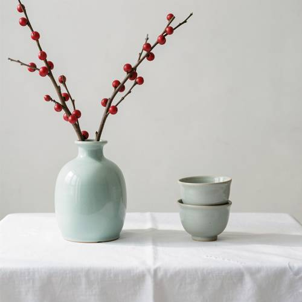
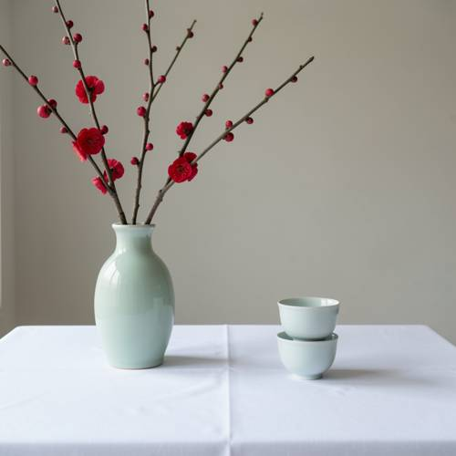

Entity Layout — On a white tablecloth, on the left side of the picture is a celadon va
On a white tablecloth, on the left side of the picture is a celadon vase with a red plum branch, and on the right are two stacked tea cups.

Direct — one call, no iteration

Continuum — Kimi K3 + FLUX.2-klein-9B
Judge — Direct
FAILEntity Layout - Two-Dimensional Space — The image correctly places a vase on the left side of the frame and two stacked tea cups on the right side, which aligns with the positional aspect of the prompt. However, the prompt specifically requires the entity on the left to be 'a celadon vase with a red plum branch'. The image depicts a celadon vase containing branches with red berries, not a red plum branch with blossoms. As the entity on the left does not match the description, the layout of the specified entities is not fulfilled.
Judge — Continuum
PASSEntity Layout - Two-Dimensional Space — In the image, a celadon vase holding branches with red blossoms is positioned on the left side of the composition. On the right side of the composition, there are two tea cups stacked on top of each other. This arrangement matches the prompt's description.
What the agent did
Thinking
Generate the image with flux2-klein. A still life: white tablecloth, celadon vase with red plum branch on left, two stacked tea cups on right.
Model
I'll generate this still life scene.
Step 1 — `generate_image`
{
"model": "flux2-klein",
"prompt": "A quiet still life photograph: on a table covered with a clean white tablecloth, on the left side of the picture stands a celadon (pale green glazed ceramic) vase holding a bare branch of red plum blossoms, and on the right side two small porcelain tea cups are stacked one on top of the other. Soft natural light, minimalist composition, calm neutral background."
}
Result img_0
Thinking
The image matches well: white tablecloth, celadon vase on left with red plum branches, two stacked tea cups on right. Composition is good. Mark best and stop.
Step 2 — `mark_best`
{
"image": "img_0",
"reason": "Matches the prompt exactly: white tablecloth, celadon vase with red plum branch on the left, two stacked tea cups on the right, clean minimalist composition."
}
Model
The image came out well on the first try and matches every element of your description: - **White tablecloth** covering the table, with a soft crease catching the light - **Left side**: a pale green celadon vase holding bare branches of red plum blossoms with buds and open flowers - **Right side**: two small celadon tea cups stacked neatly one on top of the other The composition is calm and balanced with soft natural light. I've marked this as the final result — no further edits needed.